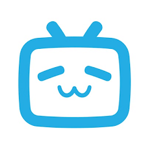

Voice AI Cohost
Share your microphone and selected live-chat messages with the same cohost session, then broadcast its spoken responses.
Bring messages from YouTube, Twitch, TikTok, Facebook, Kick, and more into one dashboard. Then display, speak, relay, moderate, or answer them with AI.
Connect with Facebook, YouTube, Twitch, Zoom, Instagram, TikTok and more - all from one dashboard.
Display selected messages on stream with customizable themes and animations.
Automate responses and create custom commands with scriptable plugins.
Use local or cloud AI for a voice cohost, chat replies, moderation, translation, summaries, and more.
Convert chat messages to speech with free and premium TTS services.
Automatically send messages from one platform to others with cross-platform chat.
Battle Royale mini-game and viewer engagement tools to keep your chat entertained.
Create interactive polls, votes, and host giveaways, all with customizable themes.
Talk with a voice cohost, run a separate chat bot, or capture a ChatGPT browser conversation as another source. Each mode is optional.
Connect with audiences across all your favorite platforms

Over 100 platforms supported!
See the full list →Get the app or extension, connect your sources, and add your overlay.